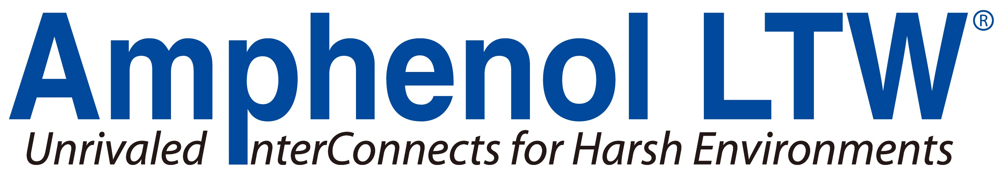
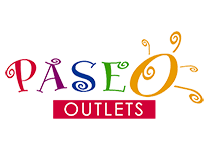
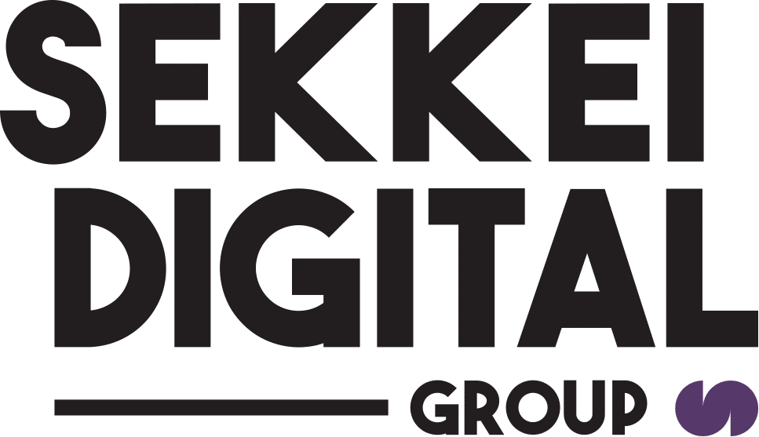
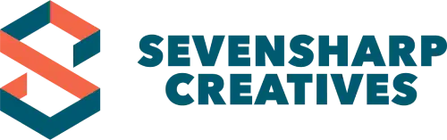

Content strategy
Keyword research, topic planning, search intent, content briefs, and editorial calendars.
Sometimes it's fiction. Sometimes it's someone's lived experience. Other times, it's the story a brand hasn't quite found the words for.
I'm Paola Limin. I write across genres, formats, and industries, always with a story at the heart of my work.
Writing by Paola Limin. Cover artwork belongs to its respective creators.
Research.
Relevance.
Clear direction.
FEATURED EXPERIENCE
Content strategy, keyword research, articles, service pages, proposal decks, and marketing assets. Led the website content revamp, including messaging, structure, and service positioning.
Keyword research, topic planning, search intent, content briefs, and editorial calendars.
Service pages, landing pages, articles, lead magnets, sales decks, and social content.
Content audits, structure, brand messaging, internal links, and publishing workflows.
BRANDS & COMPANIES




Explain product features, applications, and selection criteria with clear structure and precise language.
Match technical depth to the questions readers need answered, from definitions to detailed decisions.
Make specialist information accessible through focused service pages and supporting marketing materials.
02 / BEHIND THE WORDS
I write across fiction and commercial content, from flash fiction and serialised novels to technical articles, website copy, and content strategies. Each project begins with understanding the subject, the audience, and what the writing needs to do.
National Book Development Board — Philippines
Issued June 2021Bureau of Internal Revenue
SELECTED EXPERIENCE
Content strategy, keyword research, website copy, articles, marketing assets, and editorial workflows.
SEO-focused long-form articles, topic research, keyword integration, and editorial revisions across multiple niches.
Blog articles, campaign strategies, captions, visual copy, and topic planning for agency brands.
Original romance concepts, synopses, storylines, serialised fiction, manuscript revisions, and promotional content.
Digital campaigns, social content, lead-generation copy, and coordination of marketing deliverables.
Research, blog and social copy, visual copy, content planning, and editorial review for agency brands.
03 / THE NEXT PROJECT
A story to develop. A website to rethink.
A technical subject to explain. Let’s talk.
Tell me what you’re working on, who it’s for, and when you need it.